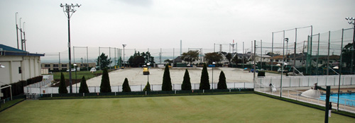
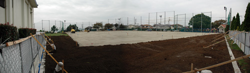
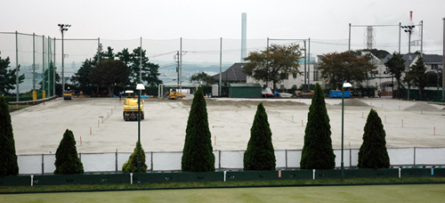

| 
YC&AC, Wednesday 12th November
Well after all the 'Um-ing and Ah-ing' and millions of votes by the ruling party, the new third generation Hybrid Turf (All weather surface) is finally being installed at YC&AC

The new pitch, which will be floodlit and therefore usable til later in the evening than the old grass pitch, should be ready for use by the beginning of January.
TML will get to use the lovely new pitch for YCAC matches plus one or sometimes 2 extra matches a weekend.

Report by FJ
|